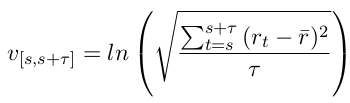
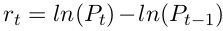
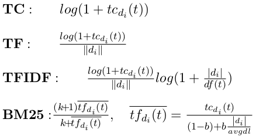
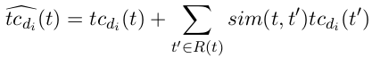
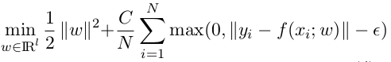
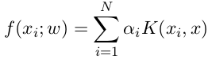

Volatility Prediction using Financial Disclosures Sentiments with Word Embedding-based IR Models
"What" part of the paper
The paper tries to build a model to predict volatility in stock marker using some financial data along with the sentiments in the annual report.
"How" part of the paper
Volatility is defined as the natural log of the standard deviation of (adjusted) return prices in a window of τ days.
rt is the return price and r̄ is the mean of return price.
Pt is the (adjusted) closing price on trading date t.
Prediction label, volatility of the stock is calculated as the mean of volatility of first four quartiles after the publication of report.
For Sentiment Analysis of the annual reports, keywords based method is used. Set of keywords is extracted from finance-specific lexicon using the positive, negative, and uncertain groups, which are stemmed using Porter Stemmer.
Word2vec vectors are trained considering the annual reports, and for each keyword in the set, 20 most similar words are added to the keyword set. Cosine similarity is used between word vectors for getting most similar words.
The word weighting schemes commonly used in IR considered is as follows:
Where tcdi(t) is the number of occurances of keyword t in report i, ||di|| denotes the Euclidean norm of the keyword weights of the report. |di| is the length of the report, avgdl is the average document length.
In addition, new state-of-the-art weighting methods in IR which benefits from word embeddings is used which is as shown below:
tcdi(t) in all the above 4 equations is replaced by this state-of-the-art weighting and all four new weights are calculated with this state-of-the-art weighting.
These term weight vectors are very high dimensional, so to bring down the dimensionality PCA is used.
This new feature vector is given to Suport Vector Reression for predicting the volatility. This formulates to the optimization problem as follows:
To solve above problem, the function f can be re-parametrized in terms of a kernel function K with weights αi
In addition to the textual features, three other Market Features were used. Fist is the historical prices. Second is the current volatility. Third is the sector.
Current volatility is calculated on the window of one quartile before the issue date of the report.
Feature Fusuion discusses the methods used to combine the Text Features and Market Features.
First method is termed as Early Fusion where both the features are simply joined in one feature space.
There is Late Fusion as well where the two models for both the features are learned seperately and then another meta model is learned to combine the reults of both. Second method used is Stacking which is a special case of late fusion. In stacking, train set is split into two(70%-30%). First portion is used to train seperate models, then the second portion is used to get labels from both models sepeartely and learn another model to combine the base models.
Another third method for fusion is MKL Algorithm which is also called as Intermidiate Fusion, it has something to do with adding more constrains to the SVM kernel learning.